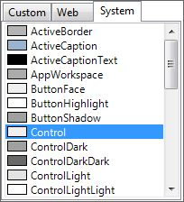
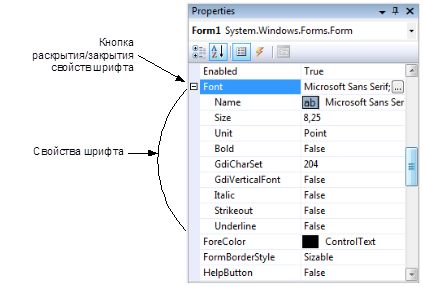

|
Мы уже увидели, что свойства могут изменяться как визуально, так
и программно. Визуальные изменения дизайнер оформляет в коде
метода InitializeComponent(). Если вы решили сами делать
изменения свойств в коде, то это можно сделать в конструкторе и
обязательно после вызова метода InitializeComponent(). Если
написать код изменений до вызова этого метода, то они могут
оказаться бессмысленными, если дизайнер в методе инициализации
компонентов сгенерирует свой код.
Откройте сейчас код формы (Form1.cs) и попробуйте в коде
конструктора присвоить свойству Text текущей формы какое-нибудь
значение — например, как показано в следующем примере:
public Form1()
{
InitializeComponent();
Text = "Это изменение в коде";
}
Запустите приложение и убедитесь, что в заголовке окна
отображается новое сообщение. Давайте вернемся в визуальный
дизайнер и посмотрим, что еще у нас есть в панели Properties.
Там очень много свойств, и все они наследуются нашей формой от
класса Form. Мы можем наделить форму дополнительными свойствами,
но у нас и так достаточно унаследованного, с чем нужно еще
разобраться. По мере надобности мы станем рассматривать те
свойства, которые будут нам нужны. Сейчас же ограничимся только
самыми основными и самыми необходимыми — на мой взгляд:

Рис. 5.6. Панель выбора цвета
-
BackgroundColor — цвет фона окна. Это свойство
имеет тип класса Color. Если щелкнуть в поле
напротив свойства, то появится кнопка
выпадающего списка. Щелкните по ней, и вы
увидите панель выбора цвета (рис. 5.6).
Панель состоит из трех вкладок: Custom
(Произвольные), Web (Web-цвета) и System
(Системные). Для окон желательно указывать один
из системных цветов и лучше, если это будет
Control для диалоговых окон и Window для окон,
которые должны отображать данные;
- Cursor —
позволяет задать тип курсора, который будет
отображаться в момент, когда курсор мыши
находится над поверхностью окна. При изменении
этого свойства в визуальном дизайнере появляется
выпадающий список, в котором перечислены
названия типов курсоров и даже показаны их
изображения;
- Enabled —
позволяет задать доступность окна. Если свойство
равно false, то компонент не станет реагировать
на действия пользователя, т. е. будет
недоступен;
- Font —
шрифт, который будет использоваться для вывода
текста поверх окна. Для окна это, на первый
взгляд, не очень актуально. Но большая
актуальность этого свойства проявляется у
компонентов, которые содержат надписи. Чтобы
изменить шрифт, можно поступить двумя способами:
-
выделить строку со свойством
Font, и в правом углу появится
кнопка с тремя точками. Щелкните
по ней, и вы увидите стандартное
окно задания свойств шрифта;
-
свойство шрифта на самом деле
является самостоятельным классом
Font со своими свойствами. Вы
можете редактировать их каждое в
отдельности. Для этого нужно
щелкнуть по кнопке с крестиком
слева от имени свойства. В окне
Properties свойства формы
расступятся, уступив место
свойствам шрифта (рис. 5.7);
- ForeColor —
цвет переднего плана, который чаще всего
используется в качестве цвета текста. Если вы
посмотрите на доступные свойства шрифта, то
заметите, что среди них нет цвета. Цвет текста
задается через свойство ForeColor;
-
FormBorderStyle — стиль контура формы. Это
свойство является перечислением, и в редакторе
свойств появляется выпадающий список для выбора
из следующих элементов (рекомендую на реальном
приложении попробовать установить каждое из
свойств и посмотреть результат лично):
-
None — контура не будет;
-
FixedSingle — тоненький
фиксированный контур, не
позволяющий изменять размеры
окна;
-
Fixed3D — контур фиксированный,
не позволяющий изменять размеры
окна, но трехмерный, создающий
эффект заглубленного окна;
-
FixedDialog — похож на
FixedSingle, только в заголовке
окна не будет значка. Такой
контур чаще всего используют для
диалоговых окон;
-
Sizable — стандартный контур,
позволяющий изменять размеры
окна;
-
FixedToolWindow — контур с очень
тоненьким заголовком окна, не
позволяющий изменять размеры
окна. Такие окна чаще всего
используются для окон с кнопками
— например, окно инструментов в
Adobe Photoshop;
-
SizableToolWindow — то же самое,
что и FixedToolWindow, только с
возможностью изменять размер
окна;
- Icon — в
этом свойстве можно задать значок для формы.
Здесь тоже есть кнопка, которая вызывает
стандартное окно для открытия файла. Загруженный
значок попадет в RESX-файл формы;
- Location —
положение окна относительно левого верхнего угла
экрана. Такое же свойство есть и у компонентов,
но там расстояние отсчитывается от левого
верхнего угла компонента родителя, на
поверхности которого находится наш элемент
управления. Данное свойство состоит из двух
составляющих: X и Y, которые раскрываются, если
щелкнуть по кнопке с крестиком слева от имени
свойства;
-
MainMenuStrip — в этом свойстве можно задать
компонент меню, который будет использоваться в
качестве главного меню для окна. Для этого на
форме должен стоять компонент класса MenuStrip.
Тогда этот компонент можно будет выбрать из
выпадающего списка;
- MaximizeBox
— булево значение, которое определяет, должна ли
отображаться в заголовке окна кнопка
максимизации окна. Если у вас выбран стиль окна,
не позволяющий изменять размеры окна, то
убедитесь, что это свойство равно false, чтобы
спрятать кнопку. Несмотря на то, что форма не
разрешает изменение размеров, кнопка
максимизации без проблем распахнет окошко на
полный экран;
- MaximumSize
— позволяет задать максимальные ширину и высоту
окна. Пользователь не сможет растянуть окно
больше, чем на указанные размеры;
- MinimizeBox
— булево значение, определяющее, нужно ли
отображать кнопку сворачивания окна;
- MinimumSize
— минимальные размеры окна, менее которых окно
не может быть уменьшено. Такое ограничение может
пригодиться, если слишком маленькие размеры
портят дизайн окна;
- Name —
название формы и имя переменной объекта, которую
вы можете использовать в коде для доступа к
свойствам объекта и для вызова его методов;
- Opacity —
процент непрозрачности окна. По умолчанию
свойство равно 100%, т. е. окно абсолютно
непрозрачно. Если нужно наполовину просветить
задний план, то можно установить значение в 50%;
- Padding —
отступы от краев окна. Свойство состоит из пяти
значений: All, Left, Top, Right, Bottom, что
соответствует отступам со всех сторон, слева,
сверху, справа и снизу. Если установить левый
отступ в значение 10, то левая кромка окна будет
размером в 10 пикселов;
- ShowIcon —
булево значение, определяющее, нужно ли
показывать значок в заголовке окна;
-
ShowInTaskBar — нужно ли отображать окно в
панели задач. Главное окно чаще всего нужно
отображать в панели задач, а вот для дочерних и
диалоговых окон это свойство лучше отключать,
иначе для разных окон одного приложения в панели
задач будет создаваться несколько меток. Как
правило, этого не должно быть;
- Size —
размер окна, его ширина и высота;
-
StartPosition — начальная позиция окна. У этого
свойства есть выпадающий список для выбора
одного из следующих значений:
-
WindowsDefaultLocation —
положение окна определяется ОС;
-
WindowsDefaultBounds — система
будет определять не только
положение, но и размеры окна;
-
CenterParent — расположить окно
по центру родительского окна. На
мой взгляд, это значение лучше
всего использовать для всех
дочерних окон;
-
Manual — расположение будет
задаваться программистом
самостоятельно через свойство
Location;
-
CenterScreen — отцентрировать по
центру экрана;
- Tag — очень
интересное свойство, но оно абсолютно ни на что
не влияет. А зачем тогда оно нужно? Вы можете
сохранять в этом свойстве любую дополнительную
информацию, потому что это свойство имеет тип
Object;
- Text —
текстовый заголовок окна;
- TopMost —
булево значение, которое определяет, должно ли
окно располагаться поверх других окон. Сразу
хочу предупредить — не злоупотребляйте этим
свойством в своих программах для главного окна,
а если и решите расположить окно поверх других,
то дайте пользователю возможность отключать эту
особенность. Многих пользователей раздражают
окна, которые перекрывают рабочую область. А вот
использование этого свойства для дочерних окон
приложения может быть очень удобным. Если окно
показано не модально, это свойство позволит окну
быть поверх остальных и не спрятаться за другими
окнами;
- WindowState
— состояние окна. Здесь можно указать одно из
трех значений:
-
Normal — нормальное состояние;
-
Maximized — окно должно быть
развернуто на весь экран;
-
Minimized — окно должно быть
минимизировано.

Рис. 5.7. Свойства для
настройки свойств шрифта
Напоминаю, что эта книга — не справочник по функциям, такой
справочник уже есть, и называется он MSDN. Мы рассматриваем
только самое интересное и учимся программировать.
Почему я рассмотрел указанные свойства? Большинство из них есть
не только у форм, но и у любого типа визуальных компонентов.
Просто они наследуются от общих для всех компонентов предков. К
тому же, я выбрал разные типы, чтобы вы увидели, что в окне
свойств для редактирования различных компонентов могут
вызываться разные редакторы.
Теперь давайте посмотрим, что скрывают под собой кнопки с
крестиками слева от некоторых свойств. Крестики могут стоять у
тех свойств, которые сами по себе являются объектами
определенного класса. Например, свойство Font является классом
Font. Раскрывая крестик у свойства Font, вы увидите свойства
класса Font. А раскрыв шрифт Font, вы можете увидеть свойство
Size — размер. Полный путь к размеру шрифта будет выглядеть так:
Control.Font.Size = 10;
В приведенном примере размер шрифта изменяется на 10. Для этого
мы меняем свойство Size объекта класса Font, который является
свойством нашего элемента управления. Может существовать и более
длинная вложенность, но в C# я не припоминаю вложенности более
5, да и более 3 встречается крайне редко. Когда вы сами станете
проектировать свои программы и классы, не делайте вложенности
более 4, иначе это могут быть просто не очень хорошо
спроектированные классы, а работа с ними окажется неудобна и
даже ужасна.
Сразу же следует рассмотреть структуры данных, с которыми вы
будете встречаться при работе с компонентами и формами: Size и
Location. Рассмотрим каждую в отдельности.
Структура Size предназначается для задания размеров — например,
размеров компонента или формы. У структуры есть два поля: Width
и Height — для указания ширины и высоты соответственно. Вы не
можете изменять свойства структуры, и следующая строка приведет
к ошибке компиляции:
Size.Height = 100;
Всегда нужно создавать новый экземпляр структуры. Например,
следующий пример устанавливает размеры окна в 200´300:
Size = new Size(200, 300);
Тип данных Size используется также для свойств MaximumSize,
MinimumSize, AutoScrollMargin и AutoScrollMinSize.
Структура Location имеет тип Point. И, судя по названию, с ее
помощью чаще всего задают точку. Часто этот тип служит для
задания положения компонента или формы. Эта структура содержит
два важных свойства: X и Y, которые хранят смещения по
соответствующим координатным осям. Следующая строка перемещает
текущую форму в позицию 10´10:
this.Location = new Point(10, 10);
У обеих структур свойства, задающие размер и положение, имеют
тип данных целого числа int. Вы не можете задать дробное число в
качестве указателя положения, да это и не имеет смысла в
WinForms, — ведь размеры формы и положение определяются
пикселами, а это минимальная единица в таком случае, и она не
может дробиться.
|